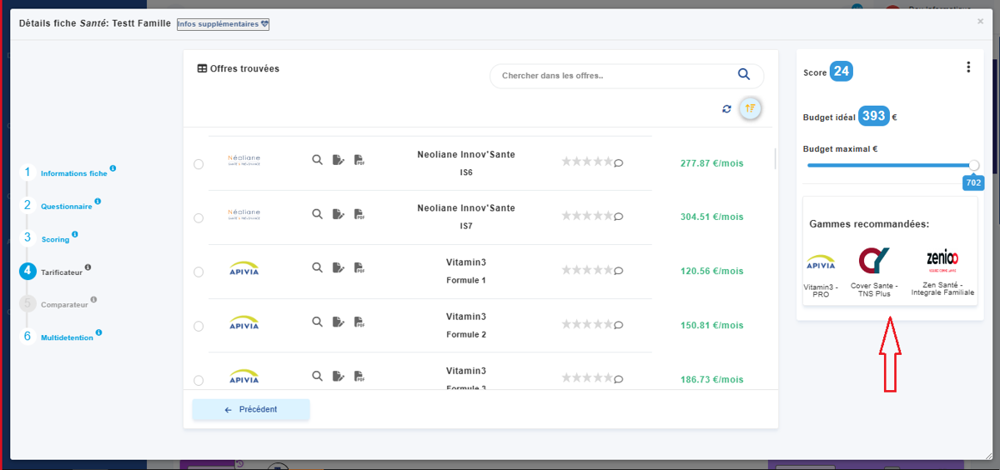
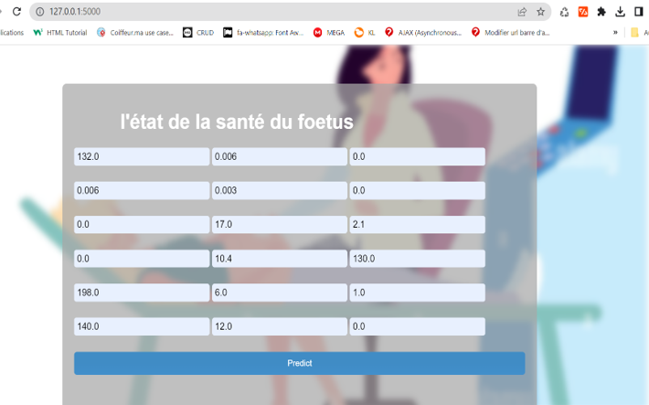
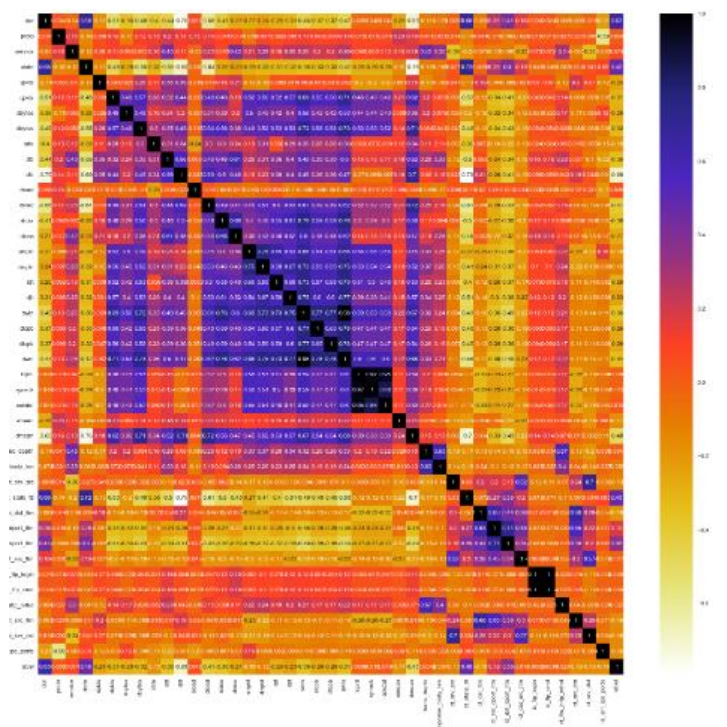
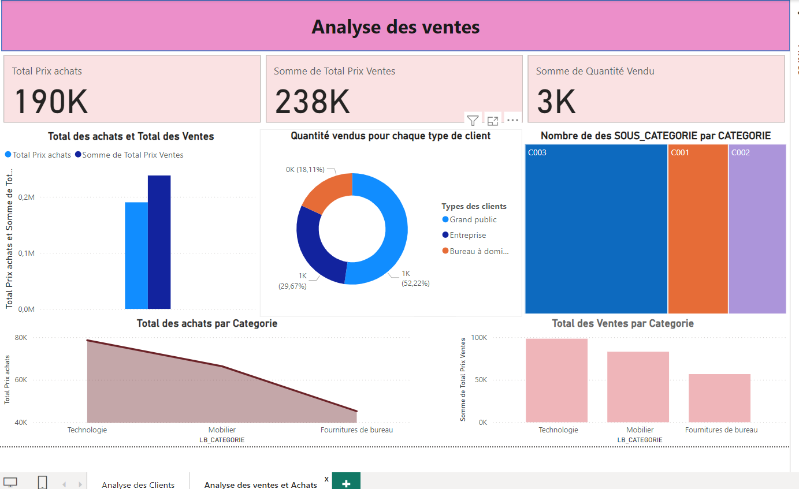
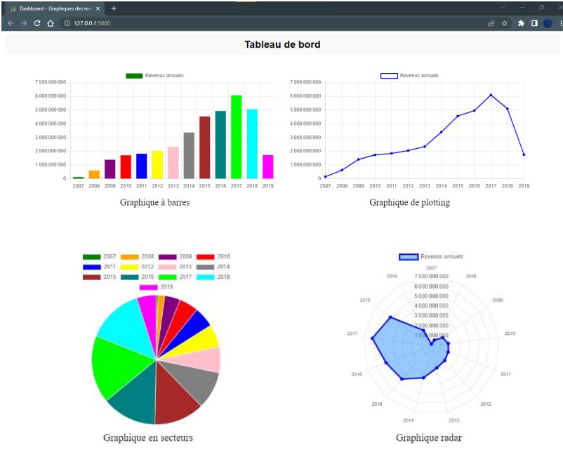

This is my End of Study Project where I Developed a recommendation system for the insurance tailored to client profiles.
The system uses ML algorithms to analyze demographic data and client preferences, offering personalized recommendations that optimize
user experience and enhance insurance sales efficiency


Fetal health status classification based on medical diagnostic measurements
(CTG) using classification techniques.

This project implements the multi-class text classification process using PySpark. It follows
the general steps of text classification and applies various techniques for data preprocessing, feature extraction and model evaluation.

implement an Intrusion Detection System (IDS) to detect malicious activities in a computer network using the Kaggle UNSW-NB15 dataset and machine learning models.

Implemented an ETL process with Talend for managing business data, followed
by the creation of interactive dashboards in Power BI.

This project implements the combination of Redis and Python to store, and visualize performance data to track on them. Using Redis as a database management system.